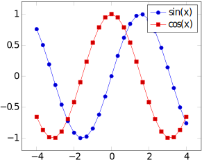

Por que utilizar LaTeX
LaTeX (lê-se: Latek) é uma ferramenta para criação de documentos, podendo ser:
- Apresentações de slides;
- Relatórios de trabalhos de aula;
- Artigos científicos;
- Livros;
- Provas.
E ainda mais. Tudo isso levando em conta uma ótima qualidade de tipografia, disposição dos elementos (evitando poluição visual, por exemplo), e outros fatores relacionados a estética.
É possível ler mais sobre LaTeX na página oficial do projeto.
Então, seguem alguns dos motivos para se utilizar LaTeX:
Qualidade tipográfica
Como mencionado anteriormente, LaTeX foca em ter uma qualidade tipográfica excelente. Um PDF gerado com a ferramenta dificilmente terá algum serrilhado, apresentará alguma deformação ou coisa do tipo. Isso se torna ainda melhor quando se tratam de expressões matemáticas, como por exemplo:
Essa expressão é criada utilizando:
\begin{equation}
\sigma_{prod}^{pA}(s) = \int_{0}^{\infty} 2\pi bdb
\left\lbrace
1 -
\left[
1 -
\frac{T_{A}(b)\sigma_{inel}^{NN}(s)}{A}
\right]
^{A}
\right\rbrace
\stackrel{A \gg 1}{\approx}
2\pi\int_{0}^{\infty} bdb
\left\lbrace
1 -
\exp\left[
-T_{A}(b)
\sigma_{inel}^{NN}(s)
\right]
\right\rbrace
\end{equation}
Qualidade para gráficos/diagramas
Se você precisa plotar dados ou desenhar diagramas, LaTeX disponibiliza componentes que são capazes de renderizá-los em alta qualidade. É possível, inclusive, descrever os diagramas utilizando o próprio LaTeX, podendo ser até Máquinas de Estado, ou mesmo gráficos 3D.
Um exemplo de plotagem de função:

Feita com:
\begin{tikzpicture}
\begin{axis}[domain=-4:4, legend]
\addplot {sin(deg(x))};
\addplot {cos(deg(x))};
\legend{
$\sin(x)$,
$\cos(x)$
}
\end{axis}
\end{tikzpicture}
Se preocupe com o conteúdo, não a formatação
Este é um ponto que serve para entender como utilizar LaTeX: diferente de programas como Microsoft Word ou Google Docs, a sua prioridade não será alterar os mínimos detalhes para a formatação de margens, posicionamento de imagens, etc., e sim com o conteúdo. Quem cuidará da formatação é o próprio LaTeX, o que inclui deixar seu documento nas normas da ABNT! Vale lembrar que quem cuida do projeto LaTeX são pessoas que entendem de tipografia, formatação e apresentação, ou seja: não irão deixar a desejar nesses quesitos.
Fácil gerenciamento de referências
Quem escreve documentos como artigos científicos sabe como referências são importantes e, em muitos casos, difícieis de administrar. BibTeX, uma ferramenta voltada a LaTeX, cuida delas automaticamente, bastando apenas fornecer as informações das referências (título, autor, ano de publicação...). E se a mesma referência for necessária em diferentes formatos (por exemplo, publicar para dois journals que cobram formatações de referência específicas), basta apenas especificar qual o formato, sem que se tenha que reescrever as referências.
Fácil de citar referências
Assim como é fácil gerenciar as referências, citá-las também é. Por exemplo, suponha que seu em seu projeto tenha a seguinte referência descrita com BibTeX:
@inproceedings{AwesomeAuthors:2018,
title = {"An awesome article about BibTeX"},
author = {"Mr. and Mrs. Awesome"},
year = 2018,
}
Em qualquer momento do texto, é possível citá-lo como:
Segundo~\cite{AwesomeAuthors:2018}, fazer citações LaTeX é maravilhoso.
Isso irá, dependendo do formato de citações escolhido (ABNT ou IEEE, por exemplo), colocar a citação corretamente. Se for um formato citações enumerado (ou seja, em vez de "(Autor, ano)" ser "[1]", "[2]", etc.), a enumeração é feita automaticamente.